1. Présentation et premiers pas
Nafa est l'outil de gestion de l'association. Il permet de suivre les membres, de pointer les cotisations mensuelles, de gérer les appels de fonds exceptionnels, les prêts, les événements, les annonces et la caisse.
1.1 Ce dont vous avez besoin
- Un navigateur récent (Chrome, Edge, Firefox ou Safari).
- L'adresse de l'application, communiquée par l'administrateur.
- Un identifiant (adresse e-mail ou numéro de téléphone) et un mot de passe, créés par l'administrateur.
1.2 Vos droits dépendent de votre rôle
Ce guide décrit toutes les fonctions. Selon votre rôle, certaines actions ne sont pas proposées. Si un bouton vous manque, c'est normal : demandez à l'administrateur si vous pensez en avoir besoin.
| Rôle | Ce que vous pouvez faire |
|---|---|
| Administrateur | Tout, y compris la gestion des comptes utilisateurs, des données de référence, des paramètres et l'annulation de paiements. |
| Super utilisateur | Les mêmes droits que l'administrateur, sauf la gestion des comptes utilisateurs et des données de référence. Il peut annuler des paiements. |
| Trésorier | Encaissements, prêts, dépenses, dons, annulation de paiements, paramètres financiers. |
| Secrétaire | Membres, événements, annonces. Consultation des finances. |
| Lecteur | Consultation uniquement, sans modification. |
| Membre | Accès à l'espace membre uniquement (voir section 13). |
1.3 Organisation de l'écran
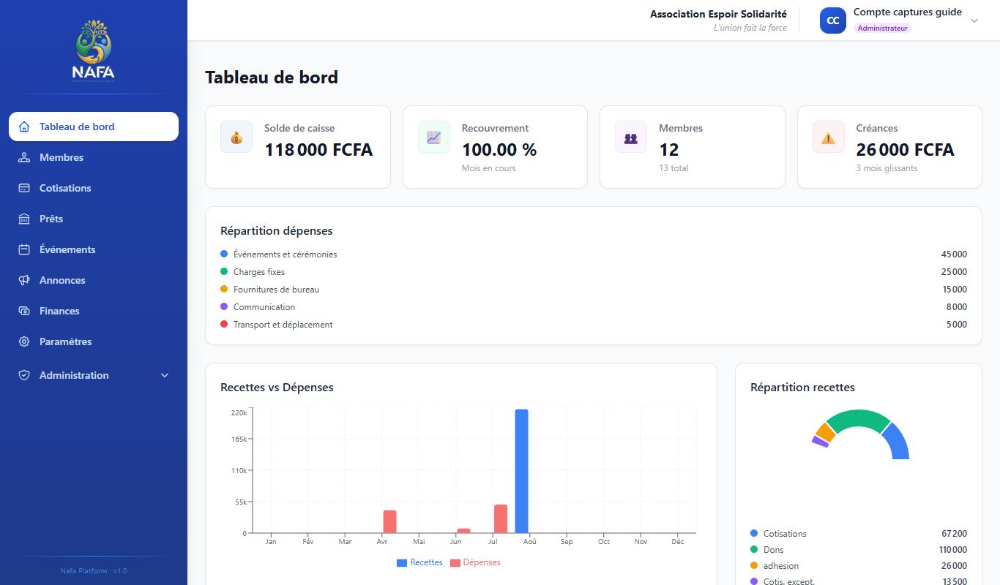
- Menu à gauche (fond bleu) : les grandes rubriques. Sur téléphone, il s'ouvre avec le bouton ≡ en haut à gauche.
- Barre du haut : nom et devise de l'association, votre nom et votre rôle. Le menu de votre compte s'ouvre à droite.
- Zone centrale : le contenu de la page, avec son titre, ses indicateurs, ses filtres et sa liste.
1.4 Bonnes pratiques
- Enregistrez les paiements le jour où ils sont reçus.
- Renseignez le motif de toute annulation de façon précise (« Chèque sans provision », « Erreur de membre »).
- Gardez les références des reçus (REC-, CEX-, DON-) : elles permettent de retrouver chaque opération.
- Ne partagez jamais votre mot de passe, même avec un autre membre du bureau.
2. Connexion et compte
2.1 Se connecter
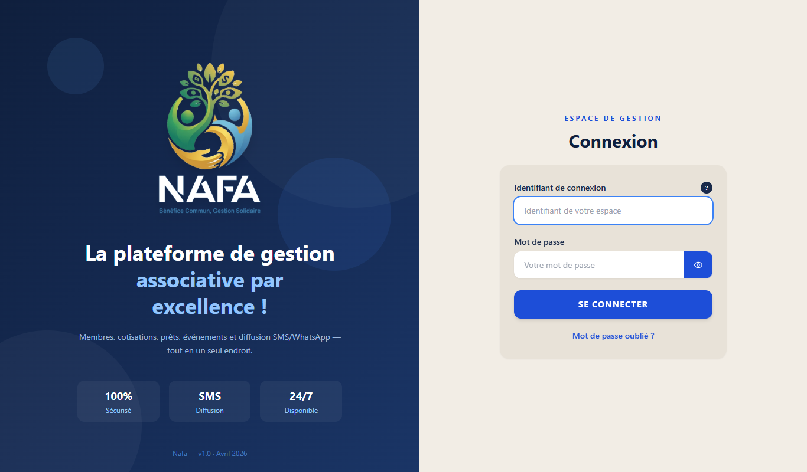
- Ouvrez l'adresse de l'application.
- Saisissez votre adresse e-mail ou votre numéro de téléphone.
- Saisissez votre mot de passe, puis cliquez sur Se connecter.
En cas d'erreur, le message « Email ou mot de passe incorrect » s'affiche. Vérifiez la saisie, puis recommencez. Après plusieurs échecs, contactez l'administrateur.
2.2 Mot de passe oublié
2.3 Changer son mot de passe
Depuis l'espace membre (Mon profil → Modifier mot de passe), il est possible de changer son mot de passe : saisissez l'actuel, puis le nouveau deux fois. Pour les comptes de gestion, demandez à l'administrateur de le modifier.
2.4 Se déconnecter
Ouvrez le menu de votre compte en haut à droite, puis choisissez Déconnexion.
3. Tableau de bord
Le tableau de bord donne l'état général de l'association en un coup d'œil. Il se met à jour automatiquement ; vous n'avez rien à saisir ici.
3.1 Les quatre indicateurs
| Indicateur | Ce qu'il mesure |
|---|---|
| Solde de caisse | Argent disponible à la date, pour l'exercice en cours. |
| Recouvrement | Part des cotisations attendues qui ont été payées. |
| Membres | Nombre de membres actifs, et total de la liste en sous-titre. |
| Créances | Montant des cotisations restées impayées ou partielles. |
3.2 Les graphiques
- Recettes vs Dépenses : comparaison mois par mois de l'année choisie.
- Répartition dépenses : montant dépensé par catégorie, du plus élevé au plus faible.
- Répartition recettes : part de chaque origine de recette (cotisations, dons, remboursements de prêts…).
4. Membres
La page Membres recense toutes les personnes de l'association. Chaque membre reçoit un matricule unique, de la forme MBR-2026-008.
4.1 Rechercher et filtrer
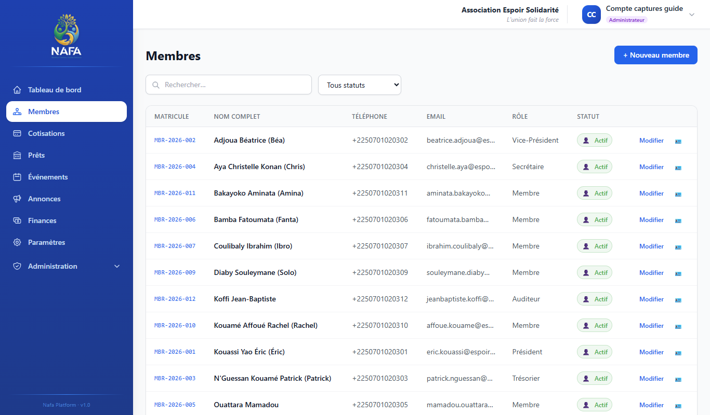
- Le champ Rechercher… filtre la liste pendant la frappe. Il s'applique au nom, à l'alias et au matricule.
- Le filtre de statut affiche les membres actifs, inactifs ou suspendus.
- Cliquez sur un membre pour ouvrir sa fiche en modification.
4.2 Créer un membre
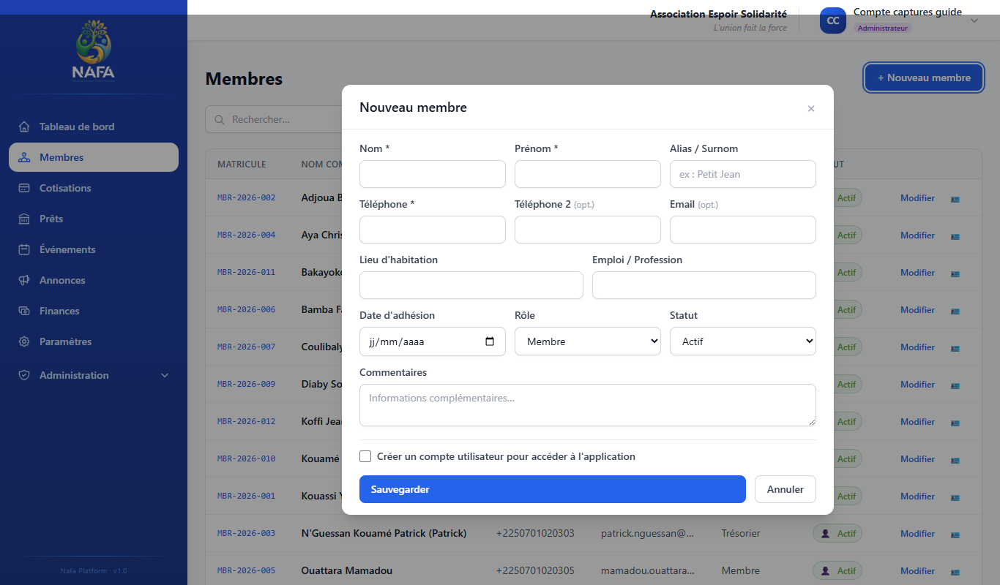
- Cliquez sur + Nouveau membre.
- Renseignez les champs (voir tableau ci-dessous). Les champs marqués * sont obligatoires.
- Cliquez sur Enregistrer. Le matricule est attribué automatiquement.
| Champ | Obligatoire | Conseil |
|---|---|---|
| Nom | Oui | Nom de famille, en majuscules recommandé. |
| Prénom | Oui | |
| Alias / Surnom | Non | Affiché entre parenthèses : « DIALLO Mamadou (Petit) ». |
| Téléphone | Oui | Sert aux notifications SMS et WhatsApp. Un même numéro ne peut pas être attribué à deux membres. |
| Téléphone 2 | Non | Second numéro, utile en cas d'indisponibilité. |
| Non | Doit être unique si renseigné. | |
| Date d'adhésion | Non | Date d'entrée dans l'association. Elle peut servir de seuil de cotisation (voir section 11). |
| Statut | Oui | Actif, inactif ou suspendu. Seuls les membres actifs reçoivent les nouveaux appels de fonds. |
| Rôle | Non | Fonction au sein de l'association : Président, Vice-Président, Trésorier, Secrétaire, Membre, Auditeur. |
| Lieu d'habitation, Emploi / Profession | Non | Informations complémentaires. |
| Commentaires | Non | Notes internes, visibles uniquement par les gestionnaires. |
4.3 Créer un compte utilisateur pour un membre
Dans la fiche du membre, la section Créer un compte utilisateur permet de lui donner accès à l'application. Renseignez :
- un mot de passe (au moins 8 caractères) ;
- un rôle utilisateur (voir section 1.2). Un membre ordinaire reçoit le rôle Membre et accède au portail.
Le message « Membre mis à jour et compte utilisateur créé » confirme l'opération. Si la création du compte échoue, la fiche du membre reste enregistrée et un avertissement s'affiche.
4.4 Modifier un membre
Ouvrez la fiche, modifiez les champs utiles, puis enregistrez. Le matricule ne change jamais.
4.5 Carte de membre
Depuis la liste, ouvrez Voir la carte pour afficher la carte du membre : nom complet, matricule, rôle, statut, téléphone et date d'adhésion. Elle peut être exportée au format PDF.
5. Cotisations mensuelles
L'onglet Mensuel de la page Cotisations est la matrice de pointage : une ligne par membre, une colonne par mois de l'année.
5.1 Lire la matrice
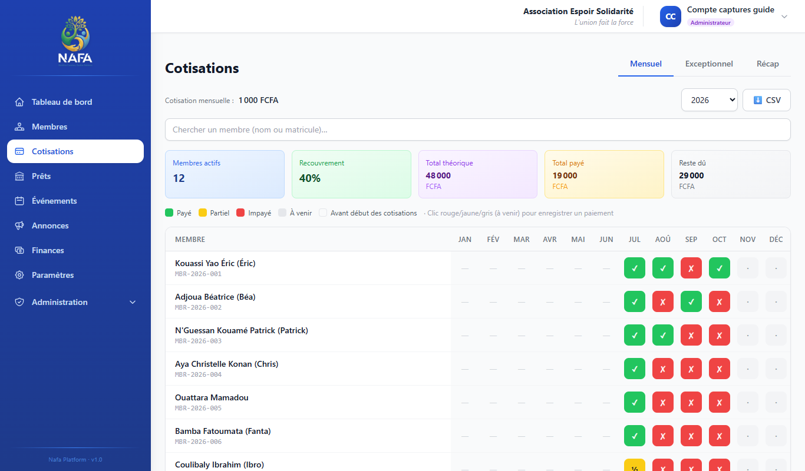
- Choisissez l'année en haut de page.
- Les cartes au-dessus de la matrice donnent le total attendu, le total payé, le reste dû et le taux de recouvrement de l'année.
- La case — correspond aux mois antérieurs à la date de début des cotisations : ils n'entrent pas dans les calculs.
5.2 Enregistrer un paiement mensuel
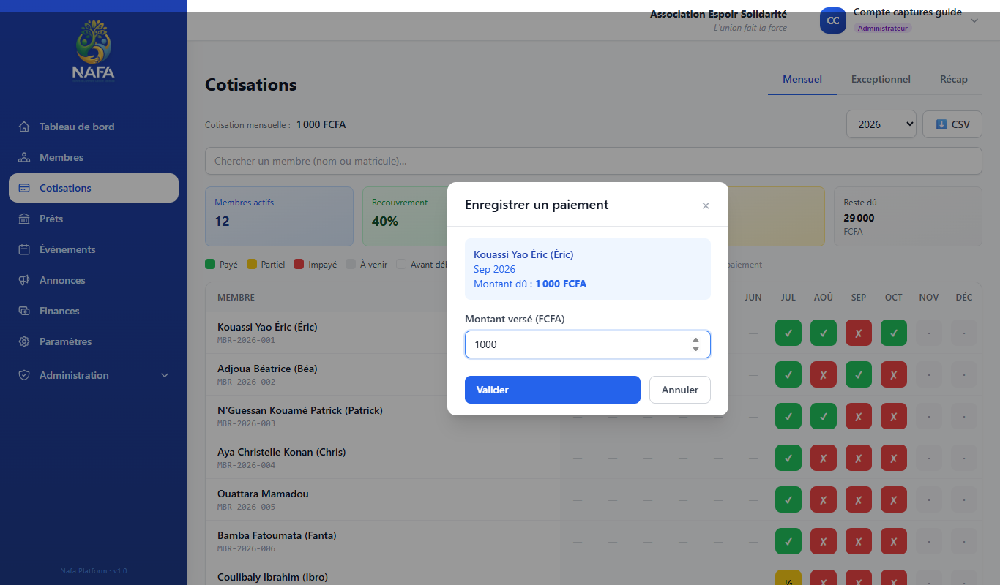
- Repérez la case du membre et du mois : elle doit être ✗ Impayé ou ½ Partiel.
- Cliquez sur la case. La fenêtre Enregistrer un paiement s'ouvre.
- Saisissez le montant versé. Il peut être inférieur au montant dû (paiement partiel) ou égal.
- Cliquez sur Enregistrer. La case devient verte si le montant est complet, jaune sinon.
Un reçu portant une référence REC-AAAA-MM-XXXXX est généré automatiquement et la caisse est mise à jour.
5.3 Payer en avance
Si l'option Autoriser le paiement des cotisations en avance est activée dans les paramètres, une case À venir devient cliquable. Règle à respecter : on ne peut pas sauter un mois. Une case future n'est payable que si tous les mois précédents dus sont déjà réglés.
5.4 Annuler un paiement mensuel
L'annulation se fait depuis Finances (voir section 11.5), par un administrateur, un super utilisateur ou un trésorier. Elle exige un motif. Le paiement reste visible, barré, avec la mention « Annulé — nom de l'auteur », et n'entre plus dans les totaux.
5.5 Exporter
Le bouton ⬇ CSV exporte les cotisations de l'année affichée, au format tableur.
6. Cotisations exceptionnelles
Une cotisation exceptionnelle est un appel de fonds ponctuel : mariage, décès, naissance, fête, projet… Elle est attribuée à un ou plusieurs membres avec une échéance optionnelle.
6.1 Créer un appel de fonds
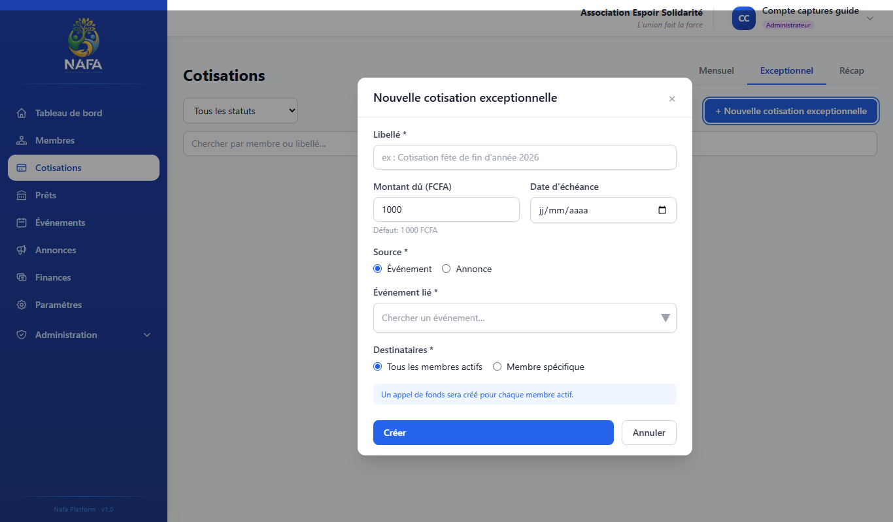
- Ouvrez Cotisations → Exceptionnel, puis cliquez sur + Nouvelle cotisation exceptionnelle.
- Saisissez le libellé (exemple : « Cotisation pour le mariage de… »).
- Choisissez la source : un événement, une annonce, ou aucune (la source est obligatoire dans l'interface, choisissez celle qui correspond).
- Choisissez le destinataire : tous les membres actifs, ou un membre précis.
- Vérifiez le montant par membre. Il est pré-rempli à partir du budget de la source, ou du montant par défaut. Si vous le modifiez à la main, votre valeur est conservée, même si vous changez ensuite de source.
- Indiquez une date d'échéance si nécessaire, puis cliquez sur Enregistrer.
6.2 Suivre un appel de fonds
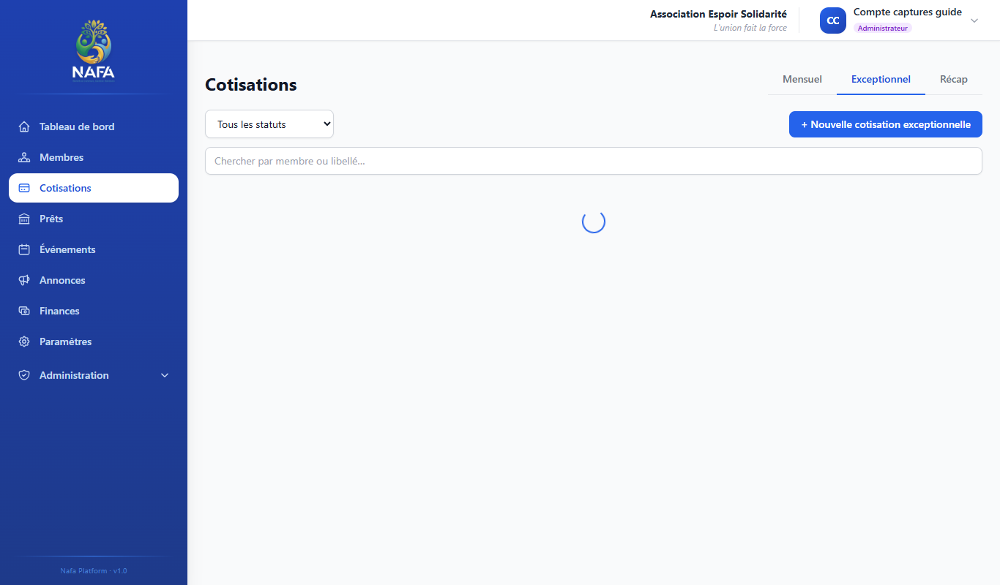
La liste regroupe les appels par source (événement ou annonce). Cliquez sur un groupe pour ouvrir son détail :
- un résumé : total dû, collecté, restant ;
- la liste des membres, avec pour chacun À payer ou son statut ;
- une zone de recherche pour retrouver un membre ;
- un bouton Payer sur chaque ligne non soldée.
6.3 Enregistrer un paiement
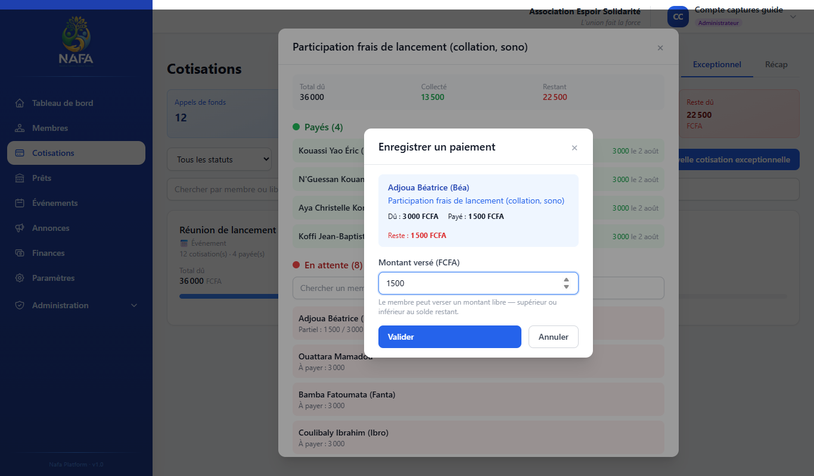
- Cliquez sur Payer à côté du membre.
- La fenêtre affiche le montant dû, le montant déjà payé et le reste.
- Saisissez le montant versé. Il peut être libre : supérieur ou inférieur au solde restant.
- Cliquez sur Valider. Le membre disparaît de « À payer » s'il est soldé, ou passe en partiel.
Un reçu CEX-AAAA-XXXXX est généré et la caisse est mise à jour.
7. Récapitulatif annuel
L'onglet Récap de la page Cotisations fait la synthèse d'une année. Il sert aux bilans, aux relances et à l'information des membres.
7.1 Choisir l'année et la vue
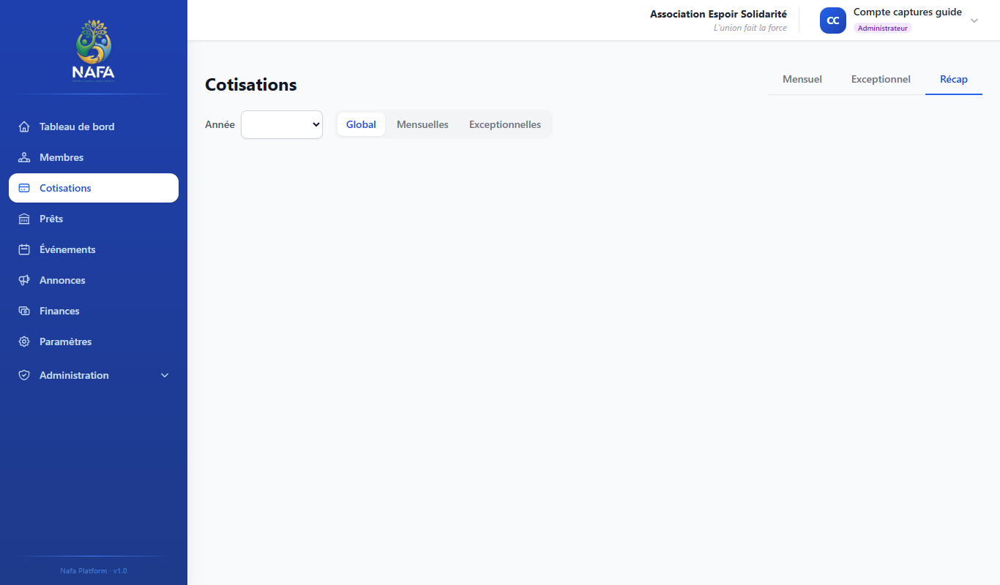
- Année : la liste propose les années ayant des données.
- Global : mensuelles et exceptionnelles ensemble, avec le taux de recouvrement de l'association.
- Mensuelles : uniquement les cotisations mensuelles.
- Exceptionnelles : uniquement les appels de fonds exceptionnels.
7.2 Filtrer les membres
Quatre filtres d'état : Tous, À jour, Partiel, Impayé. Ils s'appliquent à la vue choisie. Les totaux en bas de tableau se recalculent sur les membres affichés.
7.3 Exporter en PDF
- En vue Mensuelles : une matrice mois par mois, avec la colonne Mois dû (nombre de mois en retard par membre).
- En vue Exceptionnelles : un tableau attendu, reçu, reste dû et statut.
- En vue Global : le récapitulatif complet des deux types.
7.4 Diffuser par SMS ou WhatsApp
Les boutons SMS et WhatsApp envoient le récapitulatif de l'année. Sélectionnez des membres pour cibler, ou ne sélectionnez rien pour envoyer à tous. Une confirmation indique le nombre de destinataires avant l'envoi.
8. Prêts
Les prêts permettent à un membre d'emprunter une somme, remboursable par mensualités à un taux d'intérêt annuel.
8.1 Créer un prêt
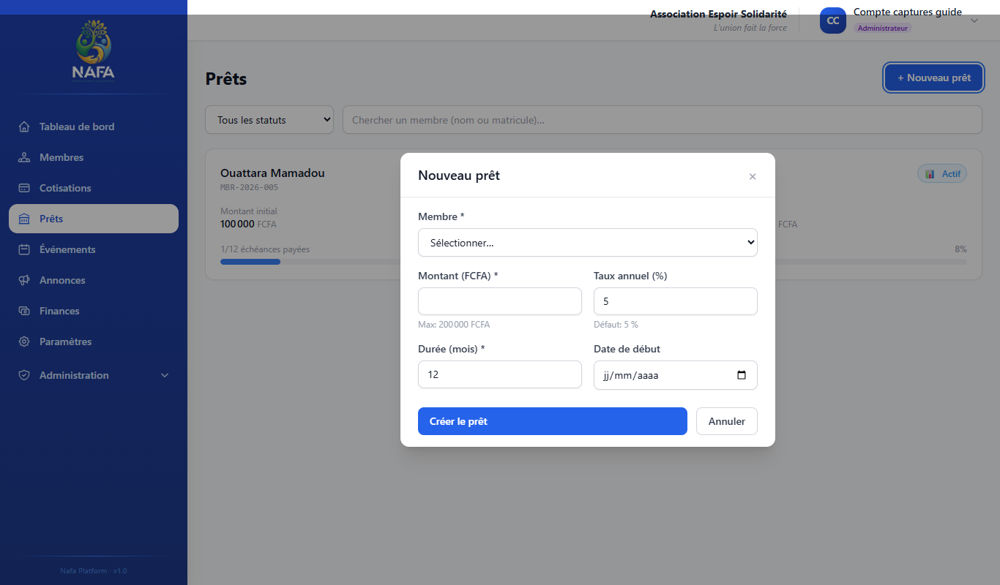
- Ouvrez Prêts, puis cliquez sur + Nouveau prêt.
- Choisissez le membre (membres actifs uniquement).
- Saisissez le montant en FCFA.
- Vérifiez le taux annuel (%). Il est pré-rempli à partir des paramètres.
- Saisissez la durée en mois et la date de début.
- Consultez la mensualité calculée en direct, puis cliquez sur Enregistrer.
Le calcul utilise des mensualités constantes : chaque mois, le même montant est dû, une part rembourse le capital et l'autre part paie les intérêts.
8.2 Lire la liste des prêts
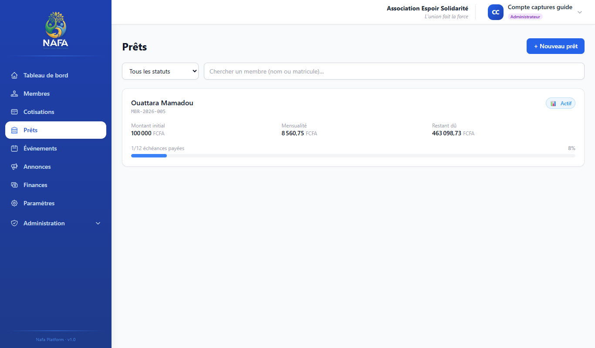
Chaque prêt est présenté sous forme de carte, avec :
- le nom du membre et le montant ;
- une barre de progression et le nombre d'échéances payées sur le total (« 3/12 échéances payées ») ;
- un statut : Actif, En retard ou Soldé.
Filtrez par statut avec le sélecteur en haut de page.
8.3 Consulter l'échéancier
Cliquez sur un prêt pour ouvrir son tableau d'amortissement : numéro d'échéance, date, mensualité, capital, intérêts et capital restant dû.
9. Événements
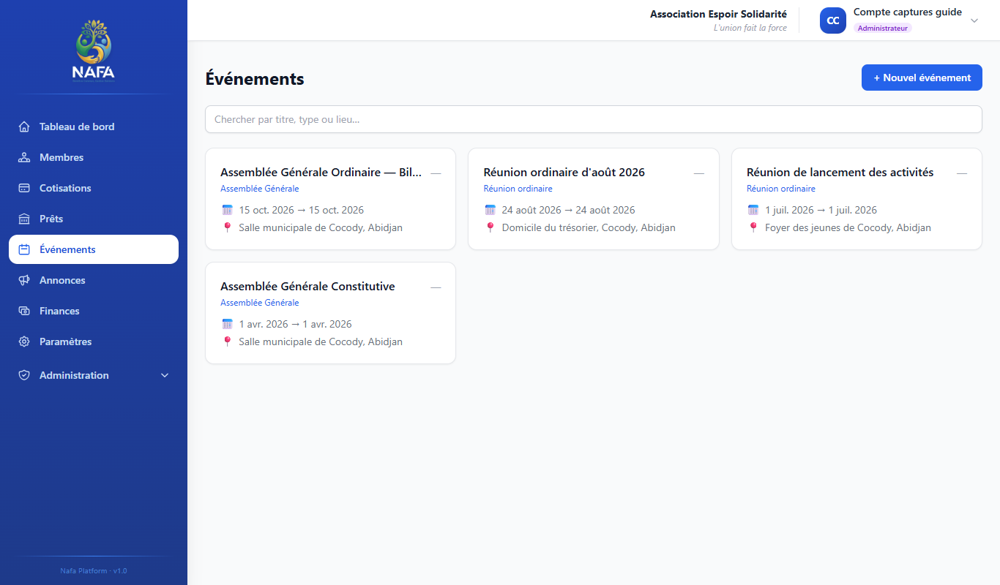
La page Événements recense les réunions, assemblées, formations, célébrations et autres activités de l'association.
9.1 Créer un événement
- Cliquez sur + Nouvel événement.
- Renseignez le titre, le type (par exemple Assemblée Générale, Réunion, Formation, Célébration), la date de début et, si besoin, la date de fin.
- Indiquez le lieu et une description si utile.
- Le budget cotisation exceptionnelle est optionnel : c'est le montant par membre suggéré lors de la création d'un appel de fonds lié à cet événement.
- Cliquez sur Enregistrer.
9.2 Statut de l'événement
Chaque événement a un statut (par défaut planifié). Mettez-le à jour au fil de l'organisation. Les statuts disponibles sont gérés dans les données de référence (section 12.2).
9.3 Participants
Ouvrez un événement pour gérer ses participants. Chaque participant a un statut :
| Statut | Signification |
|---|---|
| Inscrit | Le membre a prévu de venir. |
| Présent | Le membre était présent. |
| Absent | Le membre était attendu mais n'est pas venu. |
Pour pointer les présences, passez chaque participant au statut correspondant. Si aucun participant n'est enregistré, le message « Aucun participant enregistré » s'affiche.
9.4 Partager sur WhatsApp
Le bouton Partager sur WhatsApp ouvre WhatsApp avec le texte de l'événement, prêt à être envoyé. Si un groupe WhatsApp est configuré dans les paramètres, le partage l'utilise en priorité. Si le partage manuel est désactivé dans les paramètres, le bouton indique « Partage désactivé ».
9.5 Modifier un événement
Ouvrez l'événement, cliquez sur Modifier, puis enregistrez. Il n'existe pas de bouton de suppression : pour retirer un événement de la liste, changez son statut ou demandez à l'administrateur.
10. Annonces
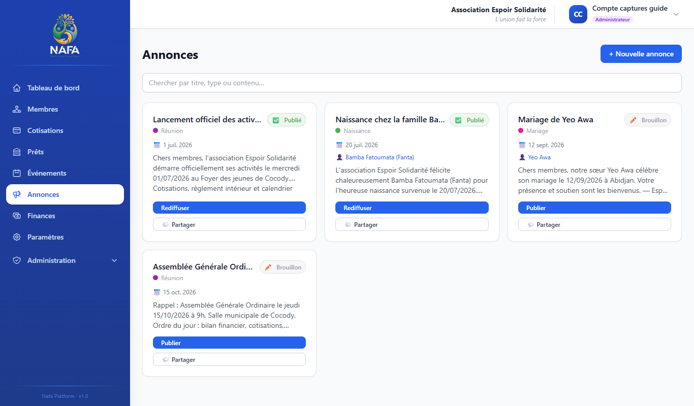
Les annonces informent les membres d'un événement familial ou associatif : mariage, décès, baptême, naissance, anniversaire, réunion, autre.
10.1 Créer une annonce
- Cliquez sur + Nouvelle annonce.
- Choisissez le type d'annonce (obligatoire).
- Renseignez le titre (obligatoire).
- Indiquez le membre concerné si l'annonce porte sur quelqu'un (le marié, le défunt…). Sinon, laissez « Aucun (externe) ».
- Indiquez la date de l'événement si elle est connue.
- Rédigez le message SMS / WhatsApp (obligatoire). Visez moins de 160 caractères pour un SMS.
- Le budget cotisation exceptionnelle est optionnel : il sert de montant suggéré pour un appel de fonds lié.
- Enregistrez.
10.2 Publier et diffuser
- Dans l'annonce, choisissez les destinataires : « Tous les membres actifs » ou « Sélection manuelle » (vous cochez alors les membres concernés).
- Cliquez sur Publier. Les envois SMS et WhatsApp partent pour les canaux activés dans les paramètres.
- Le suivi affiche, pour l'annonce, le nombre de messages envoyés par SMS et par WhatsApp.
L'envoi est automatique et s'effectue en arrière-plan : il peut prendre quelques instants pour une liste importante. Un envoi publié ne peut pas être annulé.
10.3 Partage manuel
Le bouton Partager sur WhatsApp ouvre WhatsApp avec le texte de l'annonce, pour une diffusion faite par vous-même (par exemple dans le groupe de l'association).
11. Finances
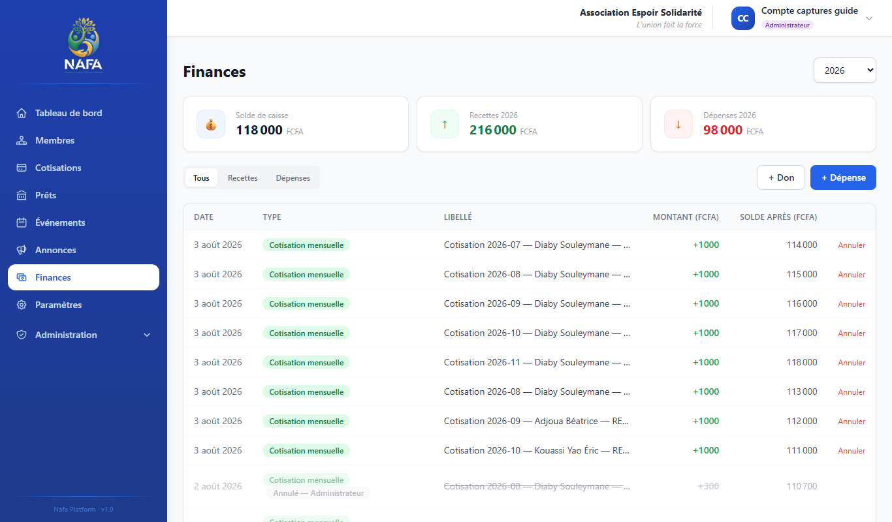
La page Finances présente la caisse de l'exercice et l'ensemble des mouvements : recettes et dépenses.
11.1 Lire la caisse
- Solde de caisse : argent disponible à la date.
- Recettes et Dépenses de l'année, en cartes.
- Le tableau des mouvements liste chaque opération, avec sa date, son libellé, son montant, sa référence et son auteur.
Filtrez par Tous, Recettes ou Dépenses. Les mouvements annulés apparaissent barrés et ne comptent plus dans les totaux.
11.2 Enregistrer un don
- Cliquez sur Don.
- Indiquez le donateur : un membre (liste) ou une personne extérieure (saisie du nom).
- Saisissez le montant et la date du don.
- Précisez le motif / observation, un événement lié si le don concerne un événement, et la référence de pièce justificative si vous en avez une.
- Enregistrez. Un reçu
DON-AAAA-XXXXXest généré et la caisse est augmentée.
11.3 Enregistrer une dépense
- Cliquez sur Dépense.
- Choisissez la catégorie (obligatoire) : fournitures, transport, communication, événements, décaissement de prêt…
- Saisissez le libellé (obligatoire), le montant, la date, le bénéficiaire et la référence de pièce justificative.
- Enregistrez.
11.4 Décaissement de prêt
Créer un prêt ne crée pas de mouvement de caisse. Le versement au membre doit être enregistré à part, comme une dépense de la catégorie Décaissement prêt. De même, les remboursements ne sont pas enregistrés automatiquement dans la caisse (voir section 17).
11.5 Annuler un paiement
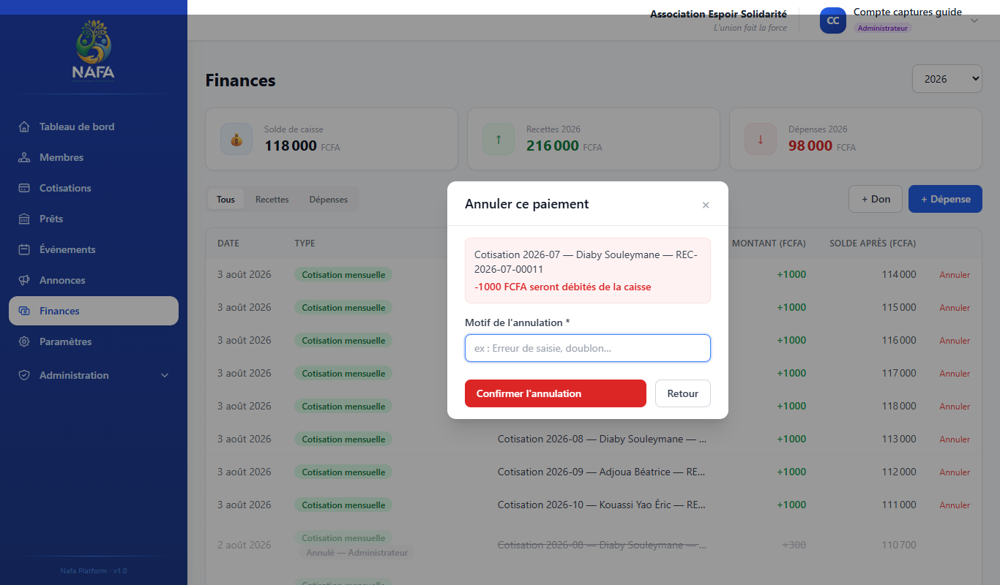
- Dans le tableau des mouvements, repérez la ligne à annuler (cotisation mensuelle, cotisation exceptionnelle ou don).
- Cliquez sur le bouton d'annulation de la ligne. Ce bouton n'apparaît que pour les administrateurs, les super utilisateurs et les trésoriers.
- Saisissez le motif de l'annulation (obligatoire) et confirmez.
Le mouvement reste visible, barré, avec son motif et le nom de la personne qui l'a annulé. L'opération n'est pas effacée : c'est une trace, pas une suppression. Les dépenses ne sont pas annulables depuis cet écran.
12. Paramètres
La page Paramètres est organisée en quatre onglets. Certaines valeurs conditionnent le fonctionnement de l'application : modifiez-les avec précaution.
12.1 Identité
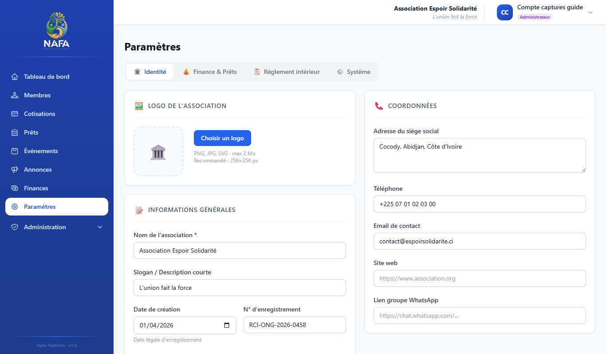
- Nom de l'association, slogan, adresse du siège, téléphone, e-mail de contact, site web.
- Date de création (date légale) et date de début d'activité (date réelle de démarrage).
- Logo : PNG, JPG ou SVG, 2 Mo maximum, 256 × 256 px recommandé.
12.2 Finance & Prêts
| Réglage | Effet |
|---|---|
| Devise | Affichée à côté des montants (FCFA par défaut). |
| Cotisation mensuelle | Montant par défaut proposé pour chaque cotisation mensuelle. Ne modifie pas les cotisations déjà créées. |
| Exercice en cours | Année utilisée pour la caisse et les totaux du tableau de bord. |
| Date de début des cotisations | Les mois antérieurs apparaissent « — » et ne comptent pas dans les totaux. |
| Tenir compte de la date d'adhésion par membre | Si activé, chaque membre n'est redevable qu'à partir de sa propre date d'adhésion (ou de la date de début, si elle est plus tardive). |
| Autoriser le paiement des cotisations en avance | Permet de payer les mois à venir, sans sauter de mois (section 5.3). |
| Taux d'intérêt par défaut | Pré-rempli lors de la création d'un prêt. |
| Plafond de prêt | Montant maximum de prêt. Enregistré, mais non contrôlé à la création (section 16). |
| Diffusion SMS / WhatsApp | Active ou désactive l'envoi automatique des annonces et des récapitulatifs par canal. |
| Lien groupe WhatsApp | Lien utilisé par le partage WhatsApp des événements et annonces. |
| Partage WhatsApp manuel | Affiche ou masque le bouton de partage manuel. |
12.3 Règlement intérieur
Vous pouvez déposer le règlement intérieur au format PDF (10 Mo maximum) et saisir son texte de référence. Ces éléments sont enregistrés dans l'application, mais l'espace membre ne propose pas encore de les consulter (voir section 17).
12.4 Système
Cet onglet affiche la version de la plateforme et la date de dernière mise à jour. Il est réservé aux administrateurs.
13. Administration
Ces pages ne sont visibles que pour les administrateurs.
13.1 Utilisateurs
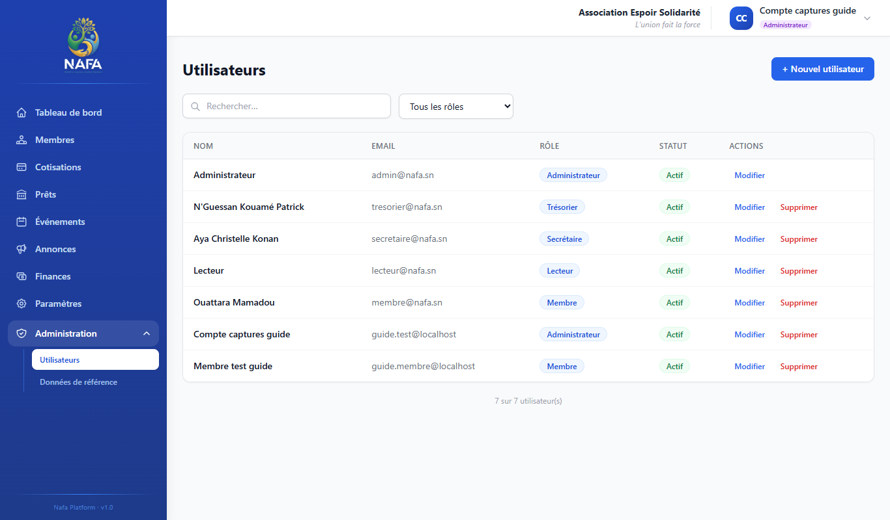
- Créer un compte : nom, adresse e-mail, rôle, mot de passe initial.
- Modifier : changer le rôle, le nom, l'e-mail ou réinitialiser le mot de passe (le champ reste vide si l'on ne veut pas le changer).
- Désactiver : un compte désactivé ne peut plus se connecter. Ses actions passées restent enregistrées.
- Supprimer : à réserver aux comptes créés par erreur.
13.2 Données de référence
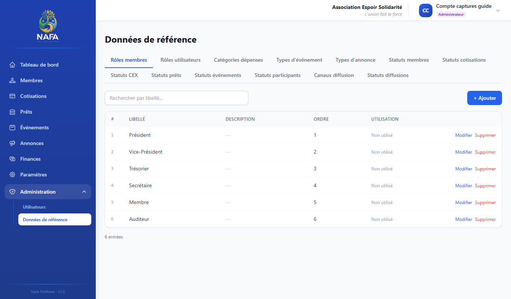
Ces listes alimentent les formulaires. Chaque liste peut être consultée, complétée et corrigée :
| Liste | Utilisée pour |
|---|---|
| Rôles des membres | Fonction au sein de l'association |
| Rôles utilisateurs | Droits d'accès à l'application |
| Catégories de dépenses | Classement des dépenses et graphiques |
| Types d'événement | Type proposé à la création d'un événement |
| Types d'annonce | Type proposé à la création d'une annonce |
| Statuts membres, cotisations, prêts, événements, participants, diffusions | Libellés et couleurs des statuts affichés |
| Canaux de diffusion | Canaux proposés pour les annonces |
14. Espace membre (portail)
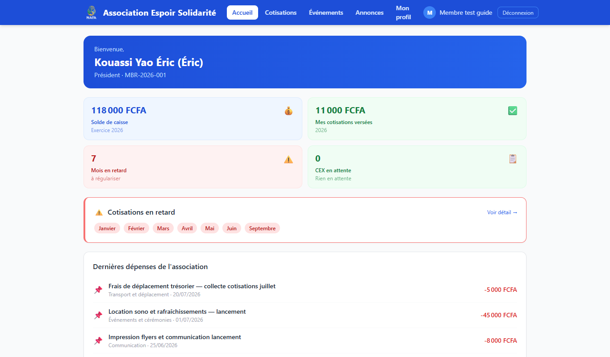
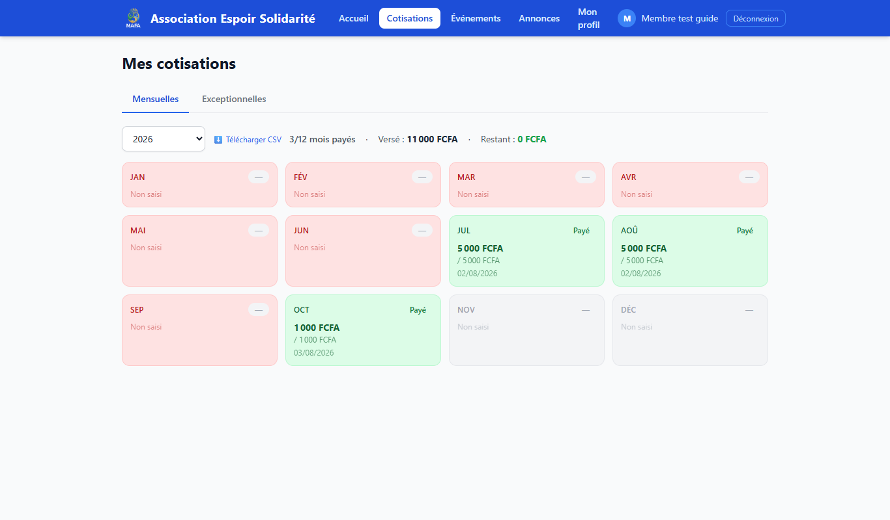
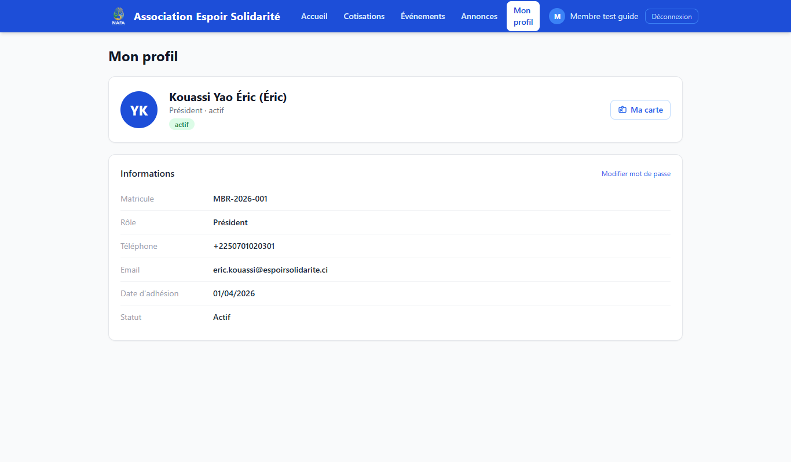
Un membre disposant d'un compte se connecte au même endroit, et arrive dans son espace personnel. Il voit ses propres informations, ainsi que deux indicateurs de l'association : le solde de caisse et les dernières dépenses. Il ne peut rien modifier dans la gestion.
| Onglet | Contenu |
|---|---|
| Accueil | Ses indicateurs (cotisations versées, mois en retard, cotisations exceptionnelles en attente), la liste de ses mois en retard, et le solde de caisse avec les dernières dépenses de l'association. |
| Cotisations | Ses cotisations mensuelles et exceptionnelles, avec le montant dû et payé. Export CSV de ses lignes. |
| Événements | La liste des événements, en consultation. |
| Annonces | Les annonces publiées. |
| Mon profil | Ses coordonnées, et la modification de son mot de passe. |
15. Références et numérotation
Chaque opération financière reçoit une référence unique, utile pour les échanges avec les membres et les contrôles.
| Préfixe | Opération | Exemple |
|---|---|---|
REC- | Paiement d'une cotisation mensuelle | REC-2026-10-00042 |
CEX- | Paiement d'une cotisation exceptionnelle | CEX-2026-00117 |
DON- | Don | DON-2026-00008 |
MBR- | Matricule d'un membre | MBR-2026-008 |
16. Questions fréquentes
Je me suis trompé de montant sur un paiement. Que faire ?
Si le paiement est récent et que vous avez les droits, annulez-le depuis Finances avec un motif clair, puis enregistrez le bon montant. Sinon, demandez à un trésorier, un super utilisateur ou un administrateur.
Un membre n'apparaît pas dans la liste d'un appel de fonds.
Seuls les membres au statut actif reçoivent un nouvel appel de fonds. Vérifiez son statut dans sa fiche.
Le montant pré-rempli dans un appel de fonds ne me convient pas.
Modifiez-le à la main : votre saisie est conservée, même si vous changez de source ensuite.
Le récapitulatif affiche « Aucun membre trouvé ».
Le filtre d'état ou la recherche est peut-être trop restrictif. Cliquez sur Tous, ou changez la vue.
Une case de la matrice est grisée avec un tiret « — ».
Le mois est antérieur à la date de début des cotisations. Ce n'est pas une erreur, il n'est pas dû.
J'ai envoyé une annonce par erreur.
Une annonce publiée ne peut pas être rappelée. Informez le bureau : une correction peut être diffusée sous forme de nouvelle annonce.
Le bouton SMS ou WhatsApp n'apparaît pas.
Le canal est désactivé dans les paramètres (Finance & Prêts → Diffusion). Demandez à un administrateur de l'activer.
Je ne peux pas modifier une valeur.
Votre rôle ne donne peut-être pas ce droit. Demandez à un administrateur de vérifier votre rôle.
La page ne se charge pas ou affiche une erreur.
- Rechargez la page (touche F5, ou Ctrl+F5 pour vider le cache).
- Vérifiez votre connexion internet.
- Si le problème persiste, déconnectez-vous puis reconnectez-vous.
- Si rien ne fonctionne, signalez à l'administrateur l'écran, l'heure et l'action effectuée.
17. Points connus et limites
Ces points sont signalés pour que vous ne soyez pas surpris. Ils sont suivis par l'équipe technique.
| Sujet | Situation actuelle | Ce qu'il faut faire en attendant |
|---|---|---|
| Mot de passe oublié | Le lien est présent mais n'envoie pas encore de réinitialisation. | Demander à l'administrateur de le réinitialiser. |
| Remboursement des échéances de prêt | L'échéancier et l'avancement s'affichent, mais l'interface ne permet pas encore d'enregistrer un remboursement d'échéance. | Consigner les remboursements reçus en recette, et tenir le suivi à part. |
| Plafond de prêt | Enregistré dans les paramètres, non contrôlé à la création d'un prêt. | Vérifier le plafond manuellement avant chaque prêt. |
| Mot de passe pour les comptes de gestion | Seul l'espace membre propose le changement de mot de passe. | Demander à l'administrateur. |
| Suppression | Un membre ou un événement ne se supprime pas depuis l'interface. | Changer le statut, ou demander à l'administrateur. |
| Caisse et prêts | Créer un prêt, verser un prêt ou recevoir un remboursement ne crée pas de mouvement de caisse automatique. | Enregistrer le versement comme dépense (« Décaissement prêt ») et les remboursements comme recettes, à la main. |
| Règlement intérieur | Le PDF est enregistré, mais l'espace membre ne propose pas encore de le consulter. | Transmettre le document aux membres par un autre moyen. |
18. Glossaire
| Terme | Définition |
|---|---|
| Appel de fonds | Cotisation exceptionnelle demandée à un ou plusieurs membres pour un besoin précis. |
| Caisse | Argent disponible de l'association, pour un exercice donné. |
| Créances | Cotisations dues et non payées. |
| Échéancier | Tableau des mensualités d'un prêt, avec capital et intérêts. |
| Exercice | Période comptable, généralement une année, qui sert de référence aux totaux. |
| Grand livre | Journal de tous les mouvements de caisse, de l'origine à aujourd'hui. |
| Matricule | Identifiant unique d'un membre, attribué automatiquement. |
| Recouvrement | Part des cotisations attendues effectivement payées. |
| Reste dû | Montant attendu moins montant payé, pour un membre ou un ensemble. |
| Mois dû | Nombre de mois échus non payés ou partiellement payés, pour un membre. |